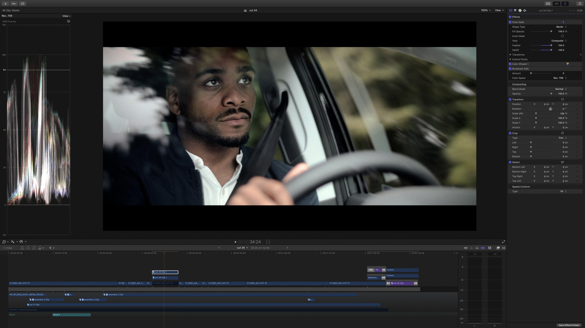

The Apple way
Written By Guy Nisbett
Once upon a time, Apple’s Final Cut Pro put something suspiciously like a £90k Avid editing system on your desktop, changing the industry overnight. Then they decided to go one better with FCPX, reinventing editing itself. Editors panicked, and jumped ship to Premiere, a creaky package that looked suspiciously like FCP7. But at least they knew how to use it.
Ten years later, it’s way past time to rethink that decision. FCPX was rushed out too quickly, and with a few crucial pro features missing. But that was then. Now, it runs super smoothly on the latest Apple hardware, allowing UHD content to be previewed with layers of effects, and no rendering.
Apple’s quirky redesign of the editing process was also, in some ways, visionary. Do we really need the old two up layout? Generally no, one viewer makes better use of the screen. Do you need tracks? Sometimes you will miss them, but mostly it’s just so much quicker to throw together an assembly in FCPX. Having directed a team of Premiere editors recently, seeing them work through simple everyday editing tasks the old fashioned way was painful to watch. Things that in FCPX would be drag and drop, in Premiere were click, click, click, click, click, click, click, click…
FCPX has a steep learning curve. For such a friendly looking app it’s surprisingly deep, and to seasoned editors, it’s potentially mind melting. But persevere, and you will find you’re doing two days work in a day. Once you realise that, there’s no going back.
